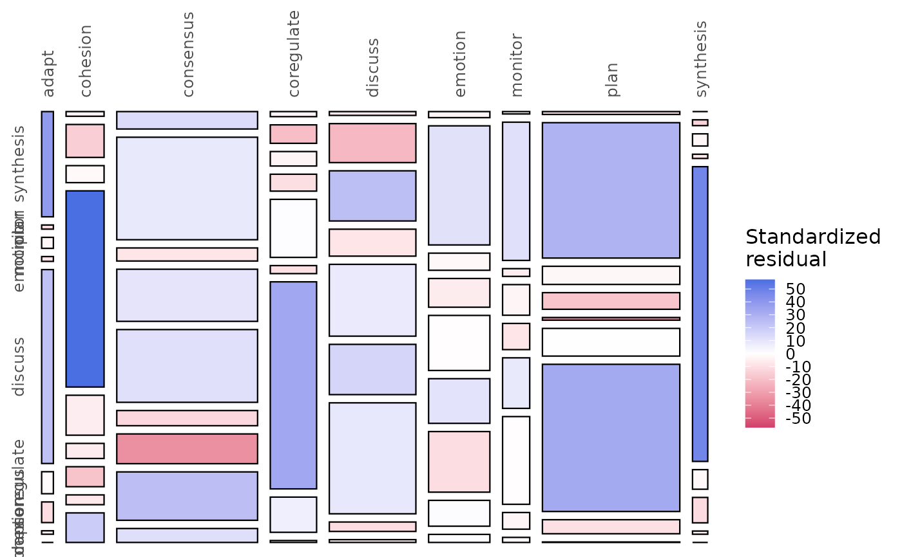
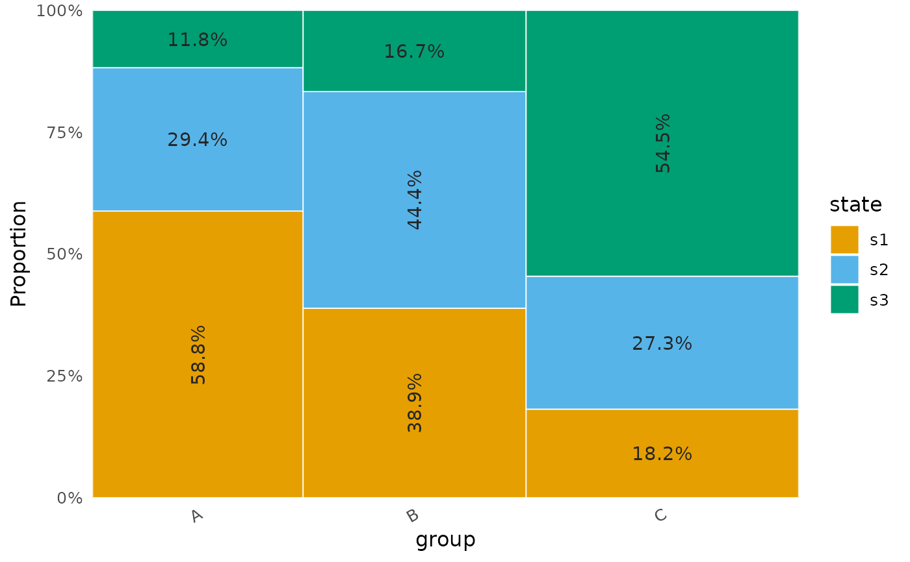

Mosaic Plot of a Network's Transition or Co-occurrence Counts
Source:R/plot_state_frequencies.R
mosaic_plot.Rdmosaic_plot() draws a mosaic display of a contingency table and fills
each tile with its standardised residual under independence: blue tiles
hold more cases than independence predicts, red tiles fewer. It reads the
transition or co-occurrence counts of a netobject or htna network, the
state counts of each group of a netobject_group, the cluster-level or
per-cluster counts of an mcml, or a table or count matrix given
directly. A data frame in long form is drawn as a plain marimekko of
shares instead, coloured by the stacked variable (or the fill
column), without residuals.
In a network's mosaic each column is a target state, its width
proportional to the transitions into it, and its segments are the source
states, stacked in proportion to their share of those transitions. For a
netobject_group the columns are the groups and the segments the states,
counted from each group's sequences, so the mosaic shows how the state
mix differs between groups. For a table or matrix, its rows are the
columns of the mosaic and its columns the stacked segments. An htna
network has its states ordered by actor, with each state's label set in
bold in its actor's colour.
The residuals describe where the counts depart from independence; they
are not tests of single cells, and transitions taken from the same
sequence are not independent draws. To test edges or group differences,
use permutation(); for a chi-square or Fisher test with
Cramér's V on two variables of a data frame, use
mosaic_analysis().
Usage
mosaic_plot(x, ...)
# Default S3 method
mosaic_plot(x, ...)
# S3 method for class 'netobject'
mosaic_plot(
x,
xlab = NULL,
ylab = NULL,
range = NULL,
top_angle = NULL,
left_angle = NULL,
residuals = c("permutation", "asymptotic"),
n_perm = 500L,
seed = NULL,
values = FALSE,
style = c("classic", "flat"),
...
)
# S3 method for class 'htna'
mosaic_plot(
x,
xlab = NULL,
ylab = NULL,
range = NULL,
top_angle = NULL,
left_angle = NULL,
residuals = c("permutation", "asymptotic"),
n_perm = 500L,
seed = NULL,
values = FALSE,
style = c("classic", "flat"),
...
)
# S3 method for class 'mcml'
mosaic_plot(
x,
level = c("macro", "clusters"),
xlab = NULL,
ylab = NULL,
range = NULL,
top_angle = NULL,
left_angle = NULL,
residuals = c("permutation", "asymptotic"),
n_perm = 500L,
seed = NULL,
ncol = 2L,
values = FALSE,
style = c("classic", "flat"),
...
)
# S3 method for class 'netobject_group'
mosaic_plot(
x,
xlab = NULL,
ylab = NULL,
range = NULL,
top_angle = NULL,
left_angle = NULL,
residuals = c("permutation", "asymptotic"),
n_perm = 500L,
seed = NULL,
ncol = 2L,
values = FALSE,
style = c("classic", "flat"),
...
)
# S3 method for class 'table'
mosaic_plot(
x,
xlab = "Row",
ylab = "Column",
range = NULL,
top_angle = NULL,
left_angle = NULL,
residuals = c("permutation", "asymptotic"),
n_perm = 500L,
seed = NULL,
values = FALSE,
style = c("classic", "flat"),
...
)
# S3 method for class 'matrix'
mosaic_plot(x, ...)
# S3 method for class 'data.frame'
mosaic_plot(
x,
x_var,
y_var,
weight,
fill = "y",
colors = NULL,
show_labels = TRUE,
label_size = 3.5,
xlab = NULL,
ylab = NULL,
...
)Arguments
- x
The object to draw: a
netobject,netobject_group,mcmlorhtnanetwork, a contingencytable, a numeric countmatrix, or a data frame in long form (seex_var,y_varandweight).- ...
With
style = "flat": styling arguments for the flat mosaic of a network, table or matrix; an unknown name raises an error that lists the valid ones. The data-frame method takes nostyleand raises an error of classnestimate_bad_inputfor any argument it does not take; themcmlmethod does the same withstyle = "classic"; the other methods ignore it with a warning of classnestimate_ignored_argument.- xlab, ylab
Axis titles. The network and
mcmlmethods draw none by default (NULL); thetableandmatrixmethods default to"Row"and"Column"; a data frame defaults to thex_varname and"Proportion". Not drawn withstyle = "flat".- range
The lower and upper limits of the residual colour scale, two increasing numbers; residuals beyond them take the end colours. Default
NULL, which fits the symmetric rangec(-M, M), withMthe largest absolute residual (at least 1), so no tile is clipped.c(-4, 4)matches tna's display.- top_angle, left_angle
Rotation, in degrees, of the column labels on top and the segment labels on the left. Default
NULL: 90 when an axis has more than three levels, 0 otherwise. Not used withstyle = "flat"or for the per-clustermcmlpanels.- residuals
How the standardised residuals are computed.
"permutation"(default) shuffles one variable's labels against the othern_permtimes, which keeps both margins, and gives each cell(observed - mean) / sdover the shuffles; a cell that never varies gets 0. It does not rely on large expected counts, so it suits sparse tables."asymptotic"gives the adjusted residuals ofstats::chisq.test(),(O - E) / sqrt(E (1 - p_row) (1 - p_col)), as vcd and tna do.- n_perm
The number of shuffles for
residuals = "permutation", at least 2. Default500; use 1000 or more for stable values in the tails.- seed
A seed for the shuffles, so the residuals repeat exactly. The session's own random stream is left as it was. Default
NULL. Ignored withresiduals = "asymptotic".- values
Whether to print each tile's residual (one decimal) inside it. Default
FALSE. In the classic style the text is white on strongly coloured tiles (absolute residual above 1.5) and dark grey otherwise; withstyle = "flat"it is white on tiles whose absolute residual exceeds 0.55 of the largest, and tiles too small for a label stay blank.- style
"classic"(default) draws black-bordered tiles with axis labels."flat"draws the mosaic ofmosaic_analysis(): white gutters between tiles, labels beside them, no axes, and a ColorBrewer red-blue residual ramp;values = TRUEthen prints the residuals in the tiles, and its styling arguments (tile_label,col_label_side,row_label_side,legend_position,legend_size,label_size, ...) go in.... Anmcmlwithlevel = "clusters"and more than one panel is drawn classic, with a message; anhtnadrawn flat loses its actor-coloured labels, with a warning.- level
For an
mcml:"macro"(default) draws one mosaic of the cluster-by-cluster counts;"clusters"draws one mosaic per cluster, as panels of one plot that share the residual scale.- ncol
For an
mcmlwithlevel = "clusters": the number of panel columns. Default2. Accepted by thenetobject_groupmethod, whose single mosaic does not use it.- x_var, y_var, weight
For a data frame: the column whose levels form the mosaic's columns (each as wide as its total
weight), the column whose levels are stacked within each column (in proportion to their share), and the column holding each row's weight, such as a count. Levels keep their factor order, or sort alphabetically.x_var,y_var,weight,fill,colorsandshow_labelsgiven with any other input raise an error of classnestimate_bad_input, as doeslabel_sizeoutsidestyle = "flat".- fill
For a data frame:
"y"(default) colours the segments byy_var; the name of another column maps that column to the fill instead (the first value per cell).- colors
For a data frame with
fill = "y": fill colours, either an unnamed vector in level order (at least one per level) or a named lookup such asc(plan = "#0072B2")that overrides only the levels named. DefaultNULL, the Okabe-Ito palette, recycled.- show_labels, label_size
For a data frame: whether to print each segment's percentage inside it (default
TRUE; segments under 4% stay unlabelled), and the label size (default3.5). Withstyle = "flat",label_sizealso sizes the flat mosaic's tile labels.
Value
A ggplot object, one rectangle per cell (empty cells are left
out of the flat and data-frame mosaics), filled by the standardised
residual (by category for a data frame). Print it to draw
it, or add ggplot2 layers and themes. An mcml with
level = "clusters" gives one faceted ggplot with a panel per
cluster and one shared fill scale. An object of an unsupported class
raises an error.
Details
A mosaic needs counts. A network whose weights are whole numbers
(method = "frequency" or "co_occurrence") is drawn from its weights;
otherwise from the transition counts stored with it at estimation, and
failing that from first-order transitions recounted from its sequence
data. A netobject_group is counted from each group's sequences, or
from the column sums of its weights when they are counts. A single
network with none of these, such as an association network (cor,
pcor, glasso, ising, mgm), raises an error. A netobject_group
must hold sequence networks: the group method counts whatever its
networks' data hold, so a group of association networks is drawn
without an error, each distinct numeric value counted as a state. An
mcml is counted the same way as a network, layer by layer; a cluster
with a single state has no table to draw: when it holds self-transitions
it is left out of the per-cluster figure with a warning, and when it holds
no transition at all the call stops with an error. When a row or
column of the table is empty, the asymptotic residuals are undefined
and every tile is drawn at 0. The geometry and the asymptotic
residuals follow tna::plot_mosaic(); the function has its own name so
the two packages can be attached together.
References
Friendly, M. (1994). Mosaic displays for multi-way contingency tables. Journal of the American Statistical Association, 89(425), 190–200. doi:10.1080/01621459.1994.10476460
Examples
data(group_regulation_long, package = "Nestimate")
net <- build_network(group_regulation_long, method = "frequency",
format = "long", actor = "Actor", action = "Action",
order = "Time")
mosaic_plot(net, seed = 1)

# A tidy data frame: columns by group, segments by state
df <- data.frame(
group = rep(c("A", "B", "C"), each = 3),
state = rep(c("s1", "s2", "s3"), 3),
count = c(10, 5, 2, 7, 8, 3, 4, 6, 12)
)
mosaic_plot(df, x_var = "group", y_var = "state", weight = "count")
